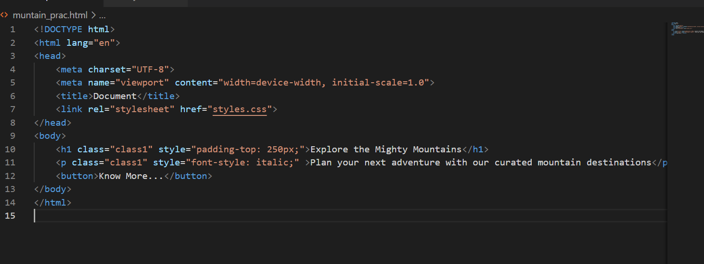

Rapidly build modern websites
without ever leaving your HTML.
A utility-first CSS framework packed with classes like flex, pt-4, text-center and
rotate-90 that can be composed to build any design, directly in your markup.

“Tailwind CSS is the only framework that I've seen scale on large teams. It’s easy to customize, adapts to any design, and the build size is tiny.”
